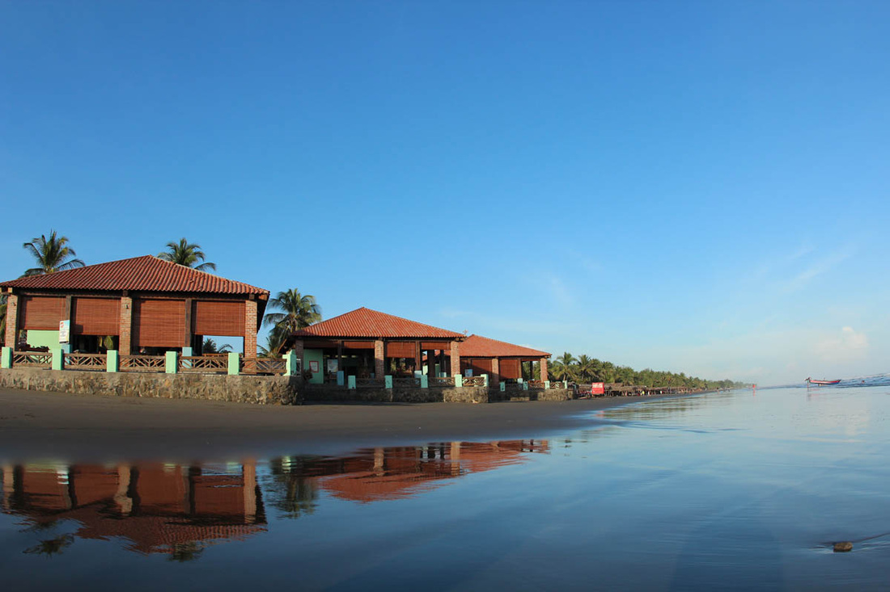
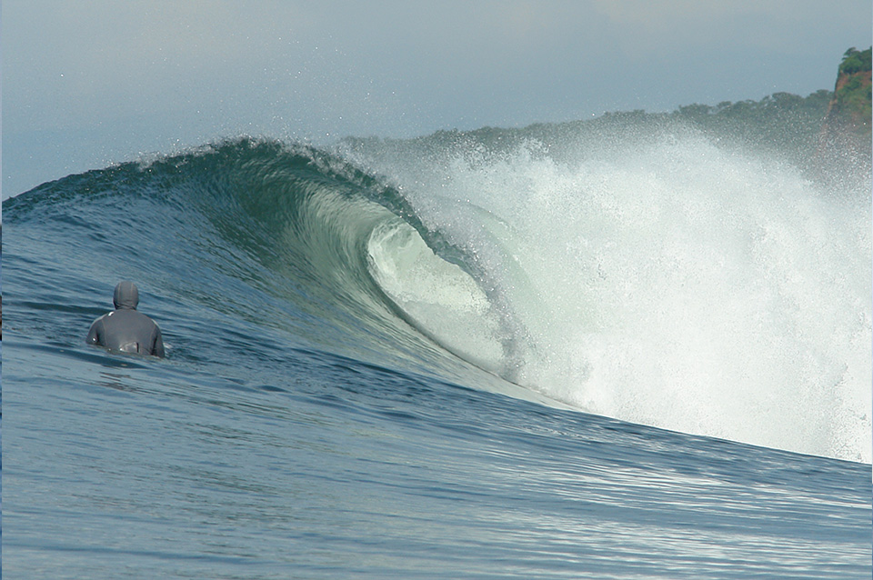

Historia
Playa El Cuco es un hermoso destino costero ubicado en el departamento de La Unión, conocido por su tranquilidad y sus extensas playas de arena dorada. Históricamente fue un lugar de pesca artesanal y hoy se ha convertido en un destino turístico ideal para familias, surfistas y amantes de la naturaleza.
Ubicación
Se encuentra a aproximadamente 160 km al este de San Salvador, en el municipio de El Cuco, La Unión. Su ubicación lo hace accesible por carretera desde la capital y otros municipios del oriente del país.
¿Por qué es famosa?
- Playas tranquilas: Sus extensas playas de arena dorada son perfectas para relajarse y disfrutar del sol. (El Salvador Travel)
- Surf y deportes acuáticos: Las olas son ideales para surfistas de todos los niveles.
- Entorno natural: Ofrece paisajes costeros, manglares cercanos y una biodiversidad destacada.
Qué hacer en Playa El Cuco
- Surf y bodyboard: Practicar deportes acuáticos en sus olas suaves y consistentes.
- Paseos en lancha: Explorar la costa y los manglares cercanos.
- Camping y picnic: Disfrutar de la playa con familia y amigos.
- Fotografía y observación de aves: Capturar la belleza natural del entorno.
Cómo llegar
En vehículo privado:
- Desde San Salvador, toma la Carretera Panamericana (CA-2) hacia La Unión.
- Continúa siguiendo las señales hacia El Cuco y Playa El Cuco.
En transporte público:
- Toma un bus hacia La Unión y luego transporte local hacia Playa El Cuco.
Galería


